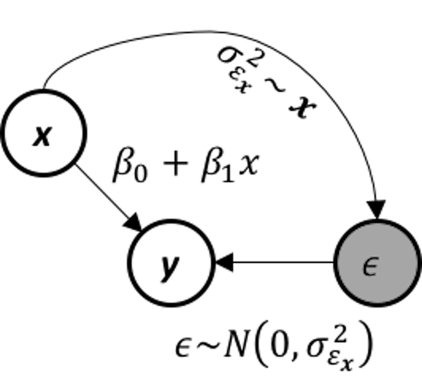
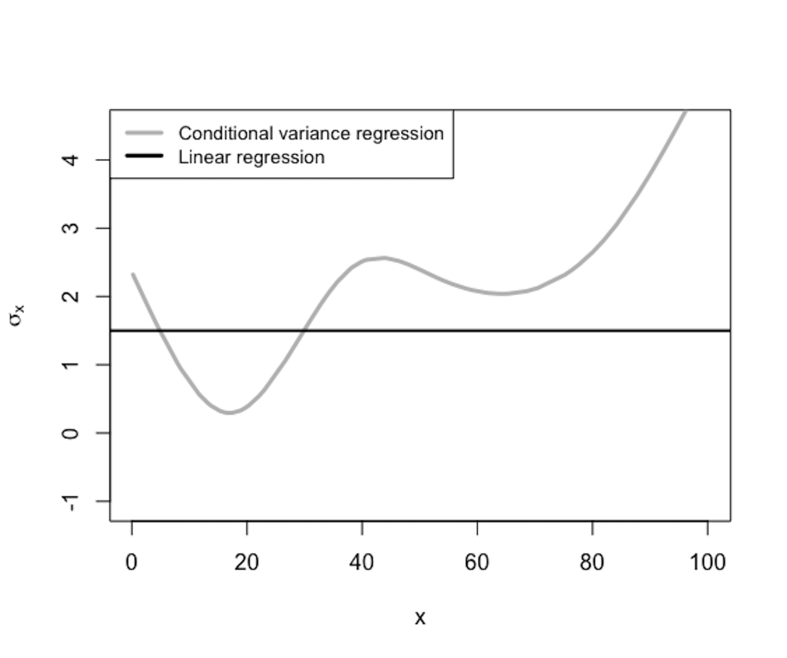
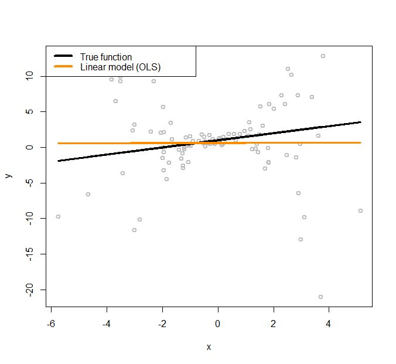
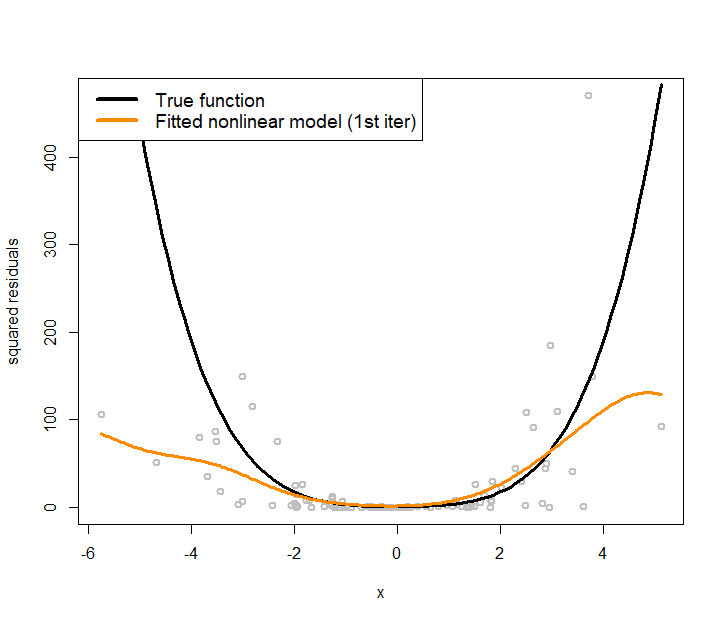
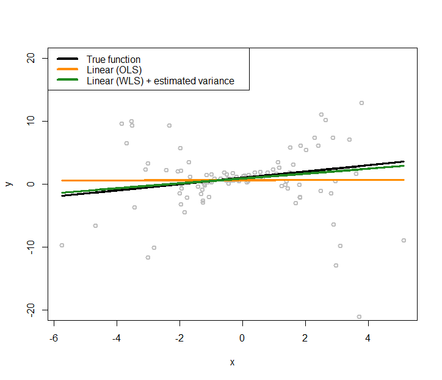
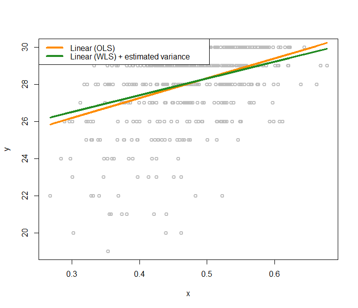
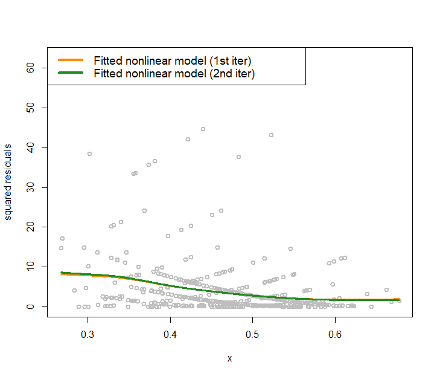

Another common complication when applying linear regression model in real-world applications is that the variance of the response variable may also change. This phenomenon is called heteroscedasticity in regression analysis. This complication can be taken care of by a conditional variance regression model that allows the variance of the response variable to be a (usually implicit) function of the input variables. This leads to the following model
\[\begin{equation} y=\boldsymbol{\beta}^T\boldsymbol{x}+\epsilon_{\boldsymbol{x}}, \epsilon_{\boldsymbol{x}} \sim N(0, \sigma^2_{\boldsymbol{x}}), \tag{99} \end{equation}\]
with \(\epsilon_{\boldsymbol{x}}\) modeled as a normal distribution with varying variance as a function of \(\boldsymbol{x}\).
 Figure 166: The data-generating mechanism of a conditional variance regression model
 Figure 167: \(\sigma_{\boldsymbol{x}}\) is a function of \(\boldsymbol{x}\)
The conditional variance regression model differs from the regular linear regression model in terms of how it models \(\sigma_{\boldsymbol{x}}\), as illustrated in Figure 166. In other words, the linear regression model is a special type of the conditional variance regression model, with \(\sigma_{\boldsymbol{x}}\) being a fixed constant as the horizontal line shown in Figure 167. The conditional variance regression model is a stacked model with one regression model on \(y\) and another model on \(\sigma_{\boldsymbol{x}}\). The model stacking is a common strategy in statistics to handle multi-layered problems.
Given a dataset with \(N\) data points and \(p\) variables
\[ \boldsymbol{y}=\left[ \begin{array}{c}{y_{1}} \\ {y_{2}} \\ {\vdots} \\ {y_{N}}\end{array}\right], \boldsymbol{X}=\left[ \begin{array}{ccccc}{1} & {x_{11}} & {x_{21}} & {\cdots} & {x_{p 1}} \\ {1} & {x_{12}} & {x_{22}} & {\cdots} & {x_{p 2}} \\ {\vdots} & {\vdots} & {\vdots} & {\vdots} & {\vdots} \\ {1} & {x_{1 N}} & {x_{2 N}} & {\cdots} & {x_{p N}}\end{array}\right]. \]
where \(\boldsymbol y \in R^{N \times 1}\) denotes the \(N\) measurements of the outcome variable, and \(\boldsymbol{X} \in R^{N \times(p+1)}\) denotes the data matrix that includes the \(N\) measurements of the \(p\) input variables and one dummy variable that corresponds to the intercept term \(\beta_0\). The remaining issue is how to estimate the regression parameters \(\boldsymbol{\beta}\). There are two situations: \(\sigma_{\boldsymbol{x}}^2\) is known and \(\sigma_{\boldsymbol{x}}^2\) is unknown.
The likelihood function is235 Readers can use Eq. (99) to derive this likelihood function. \[-\frac{\pi}{2} \ln 2 \pi-\frac{1}{2} \sum_{n=1}^{N} \log \sigma_{\boldsymbol x_{n}}^{2}-\frac{1}{2} \sum_{n=1}^{N} \frac{\left(y_{n}-\boldsymbol{\beta}^{T} \boldsymbol{x}_{n}\right)^{2}}{\sigma_{\boldsymbol x_{n}}^{2}}.\]
As we have known \(\sigma_{\boldsymbol x}^2\), the parameters to be estimated only involve the last part of the likelihood function. Thus, we estimate the parameters that minimize: \[\frac{1}{2} \sum_{n=1}^{N} \frac{\left(y_{n}-\boldsymbol{\beta}^{T} \boldsymbol{x}_{n}\right)^{2}}{\sigma_{\boldsymbol x_{n}}^{2}}.\] This could be written in the matrix form as236 \(\boldsymbol W\) is a diagonal matrix with its diagonal elements as \(\boldsymbol W_{nn}=\frac{1}{\sigma_{\boldsymbol x_n}^2}\).
\[\begin{equation} \min_\beta (\boldsymbol{y}-\boldsymbol{X \beta})^T\boldsymbol{W}(\boldsymbol{y}-\boldsymbol{X\beta}). \tag{100} \end{equation}\]
This has the same structure as the generalized least squares (GLS) problem we have mentioned in Chapter 3. To solve this optimization problem, we take the gradient of the objective function in Eq. (100) and set it to be zero
\[\frac{\partial (\boldsymbol{y}-\boldsymbol{\mathrm{X} \beta})^T\boldsymbol{W}(\boldsymbol{y}-\boldsymbol{ X\beta})}{\partial \boldsymbol \beta}=0,\]
which gives rise to the equation
\[\boldsymbol{X}^T \boldsymbol W (\boldsymbol y - \boldsymbol{X} \boldsymbol \beta) = 0.\]
This leads to the GLS estimator of \(\boldsymbol \beta\)
\[\begin{equation} \hat{\boldsymbol{\beta}} = (\boldsymbol{X}^T\boldsymbol{WX} )^{-1}\boldsymbol{X}^T \boldsymbol{W} \boldsymbol y. \tag{101} \end{equation}\]
A more complicated situation, also a more realistic one, is that we don’t know \(\sigma_{\boldsymbol x}^2\). If we can estimate \(\sigma_{\boldsymbol x}^2\), we can reuse the procedure we have developed for the case when we have known \(\sigma_{\boldsymbol x}^2\).
As shown in Figure 167, \(\sigma_{\boldsymbol x}^2\) is a function of \(\boldsymbol x\). In other words, it uses the input variables \(\boldsymbol x\) to predict a new outcome variable, \(\sigma_{\boldsymbol x}^2\). Isn’t this a regression problem? The problem here is we don’t have the “measurements” of the outcome variable, i.e., the outcome variable \(\sigma_{\boldsymbol x}^2\) is not directly measurable237 Another example of a latent variable ..
To overcome this problem, we estimate the measurements of the latent variable238 I.e., just like what we did in the EM algorithm to estimate \(z_{nm}\). See Chapter 6., denoted as \(\hat{\sigma}_{\boldsymbol{x}_n}^2\) for \(n=1, 2, \dots, N\). We propose the following steps:
Initialize \(\hat{\sigma}_{\boldsymbol{x}_n}^2\) for \(n=1, 2, \dots, N\) by any reasonable approach (i.e., a trivial but popular approach, randomization).
Estimate \(\hat{\boldsymbol{\beta}}\) using the GLS estimator shown in Eq. (101), and get \(\hat{y}_n=\hat{\boldsymbol \beta}^T \boldsymbol{x}_n\) for \(n=1, 2, \dots, N\).
Derive the residuals \(\hat{\epsilon}_n = y_n-\hat{y}_n\) for \(n=1, 2, \dots, N\).
Build a regression model, e.g., using the kernel regression model, to fit \(\hat \epsilon\) using \(\boldsymbol x\).239 I.e., the training dataset is \(\{\boldsymbol x_n, \hat{\epsilon}_n, n=1, 2, \dots, N\}\).
Predict \(\hat{\sigma}^2_{\boldsymbol x_n}\) for \(n=1,2,\dots,N\) using the fitted model in Step 4.
Repeat Steps 2 – 5 until convergence or satisfaction of a stopping criteria240 E.g., fix the number of iterations, or set a threshold for changes in the parameter estimation..
This approach of taking some variables as latent variables and further using statistical estimation/inference to fill in the unseen measurements has been useful in statistics and used in many models, such as the latent factor models, structural equation models, missing values imputation, EM algorithm, Gaussian mixture model, graphical models with latent variables, etc.
Simulation Experiment. We simulate a dataset to see how well the proposed iterative procedure works for the parameter estimation when \(\sigma_{\boldsymbol x}^2\) is unknown. The simulated data has one predictor and one outcome variable. The true model is
\[ y = 1 + 0.5 x + \epsilon_x, \quad \sigma^2_x = 0.5 + 0.8 x^2. \]
We stimulate \(100\) data points from this model using the R script shown below.
# Conditional variance function
# Simulate a regression model with heterogeneous variance
gen_data <- function(n, coef) {
x <- rnorm(100,0,2)
eps <- rnorm(100,0,sapply(x,function(x){0.5+0.8*x^2}))
X <- cbind(1,x)
y <- as.numeric(X %*% coef + eps)
return(data.frame(x = x, y = y))
}
n_train <- 100
coef <- c(1,0.5)
tempData <- gen_data(n_train, coef) Figure 168: Linear regression model to fit a heteroscedastic dataset
The simulated data points are shown in Figure 168, together with the true model (the black line).
To initialize the iterative procedure of parameter estimation for the conditional variance regression model, we fit a regular linear regression model using the following R code.
# Fit the data using linear regression model (OLS)
x <- tempData[, "x"]
y <- tempData[, "y"]
fit.ols <- lm(y~x,data=tempData)
# Plot the data and the models
x <- tempData$x
X <- cbind(1, x)
y <- tempData$y
plot(y ~ x, col = "gray", lwd = 2)
# Plot the true model
lines(x, X %*% coef, lwd = 3, col = "black")
# Plot the linear regression model (OLS)
lines(x, fitted(fit.ols), lwd = 3, col = "darkorange")
legend(x = "topleft", legend = c("True function",
"Linear model (OLS)"),
lwd = rep(4, 4), col = c("black", "darkorange"),
text.width = 4, cex = 1)The fitted line is shown in Figure 168, which has a significant deviation from the true regression model. We use the fitted line as a starting point, i.e., so that we can estimate the residuals241 Residuals \(\hat{\epsilon}_n = y_n-\hat{y}_n\) for \(n=1, 2, \dots, N\). based on the fitted linear regression model. The estimated residuals are plotted in Figure 169 as grey dots. A nonlinear regression model, the kernel regression model implemented by npreg(), is fitted on these residuals and shown in Figure 169 as the orange curve. The true function of the variance, i.e., \(\sigma^2_x = 0.5 + 0.8 x^2\), is also shown in Figure 169 as the black curve.
It can be seen that the residuals provide a good starting point for us to approximate the underlying true variance function. To reproduce Figure 169, use the following R script.
 Figure 169: Nonlinear regression model to fit the residuals (i.e., the grey dots)
# Plot the residual estimated from the linear regression model (OLS)
plot(x,residuals(fit.ols)^2,ylab="squared residuals",
col = "gray", lwd = 2)
# Plot the true model underlying the variance of the
# error term
curve((1+0.8*x^2)^2,col = "black", lwd = 3, add=TRUE)
# Fit a nonlinear regression model for residuals
# install.packages("np")
require(np)
var1 <- npreg(residuals(fit.ols)^2 ~ x)
grid.x <- seq(from=min(x),to=max(x),length.out=300)
lines(grid.x,predict(var1,exdat=grid.x), lwd = 3,
col = "darkorange")
legend(x = "topleft",
legend = c("True function",
"Fitted nonlinear model (1st iter)"),
lwd = rep(4, 4), col = c("black", "darkorange"),
text.width = 5, cex = 1.2)The orange curve shown in Figure 169 provides an approach to initialize the iterative procedure of parameter estimation for the conditional variance regression model: to estimate the \(\hat{\sigma}_{\boldsymbol{x}_n}^2\) for \(n=1, 2, \dots, N\) in Step 1.242 In R, this is done by fitted(var1). Then, for Step 2, we fit a linear regression model according to Eq. (101). This is done by the following R code.
# Fit a linear regression model (WLS) with the weights specified
# by the fitted nonlinear model of the residuals
fit.wls <- lm(y~x,weights=1/fitted(var1))
plot(y ~ x, col = "gray", lwd = 2,ylim = c(-20,20))
# Plot the true model
lines(x, X %*% coef, lwd = 3, col = "black")
# Plot the linear regression model (OLS)
lines(x, fitted(fit.ols), lwd = 3, col = "darkorange")
# Plot the linear regression model (WLS) with estimated
# variance function
lines(x, fitted(fit.wls), lwd = 3, col = "forestgreen")
legend(x = "topleft",
legend = c("True function", "Linear (OLS)",
"Linear (WLS) + estimated variance"),
lwd = rep(4, 4),
col = c("black", "darkorange","forestgreen"),
text.width = 5, cex = 1) Figure 170: Fit the heteroscedastic dataset with two linear regression models using OLS and GLS (that accounts for the heteroscedastic effects with a nonlinear regression model to model the variance regression)
The new regression model is added to Figure 168 as the green line, which generates Figure 170. The new regression model is closer to the true model.
And we could continue this iterative procedure until a convergence criterion is met.
Real data. Now let’s apply the conditional variance regression model on the AD dataset. Like what we did in the simulation experiment, we first fit a regular linear regression model, then, use the kernel regression model to fit the residuals, then obtain the estimates of the variances, then estimate the regression parameters using Eq. (101). The R code is shown below. Results are shown in Figure 171.
library(RCurl)
url <- paste0("https://raw.githubusercontent.com",
"/analyticsbook/book/main/data/AD.csv")
AD <- read.csv(text=getURL(url))
str(AD)
# Fit the data using linear regression model (OLS)
x <- AD$HippoNV
y <- AD$MMSCORE
fit.ols <- lm(y~x,data=AD)
# Fit a linear regression model (WLS) with the weights specified
# by the fitted nonlinear model of the residuals
var1 <- npreg(residuals(fit.ols)^2 ~ HippoNV, data = AD)
fit.wls <- lm(y~x,weights=1/fitted(var1))
plot(y ~ x, col = "gray", lwd = 2)
# Plot the linear regression model (OLS)
lines(x, fitted(fit.ols), lwd = 3, col = "darkorange")
# Plot the linear regression model (WLS) with estimated variance
# function
lines(x, fitted(fit.wls), lwd = 3, col = "forestgreen")
legend(x = "topleft",
legend = c("Linear (OLS)",
"Linear (WLS) + estimated variance"),
lwd = rep(4, 4), col = c("darkorange","forestgreen"),
text.width = 0.2, cex = 1) Figure 171: Fit the AD dataset with two linear regression models using OLS and GLS (that accounts for the heteroscedastic effects with a nonlinear regression model to model the variance regression)
We also visualize the fitted variance functions in Figure 172 via the following R code.
# Plot the residual estimated from the linear regression
# model (OLS)
plot(x,residuals(fit.ols)^2,ylab="squared residuals",
col = "gray", lwd = 2)
# Fit a nonlinear regression model for residuals
# install.packages("np")
require(np)
var2 <- npreg(residuals(fit.wls)^2 ~ x)
grid.x <- seq(from=min(x),to=max(x),length.out=300)
lines(grid.x,predict(var1,exdat=grid.x), lwd = 3,
col = "darkorange")
lines(grid.x,predict(var2,exdat=grid.x), lwd = 3,
col = "forestgreen")
legend(x = "topleft",
legend = c("Fitted nonlinear model (1st iter)",
"Fitted nonlinear model (2nd iter)"),
lwd = rep(4, 4),
col = c( "darkorange", "forestgreen"),
text.width = 0.25, cex = 1.2)Figure 172 shows that in the data the heteroscedasticity is significant. Learning the variance function is helpful in this context. First, in terms of the statistical aspect, it improves the fitting of the regression line. Second, knowing the variance function itself is important knowledge in healthcare, e.g., variance often implies unpredictability or low quality in healthcare operations, pointing out root causes of quality problems or areas of improvement.
 Figure 172: Nonlinear regression model to fit the residuals in the 2nd iteration for the AD data